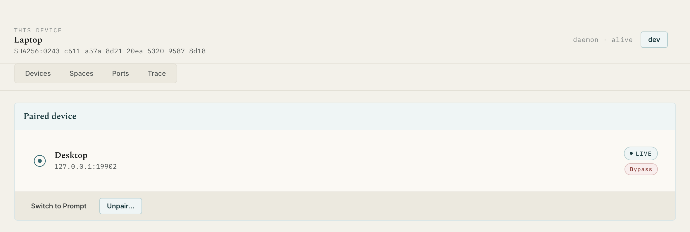
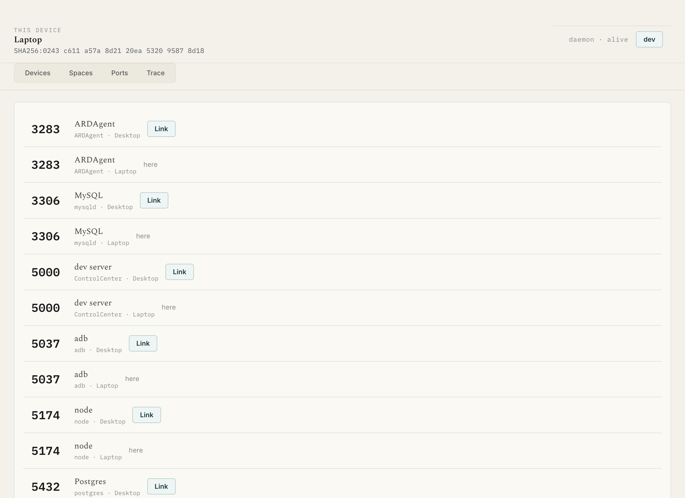
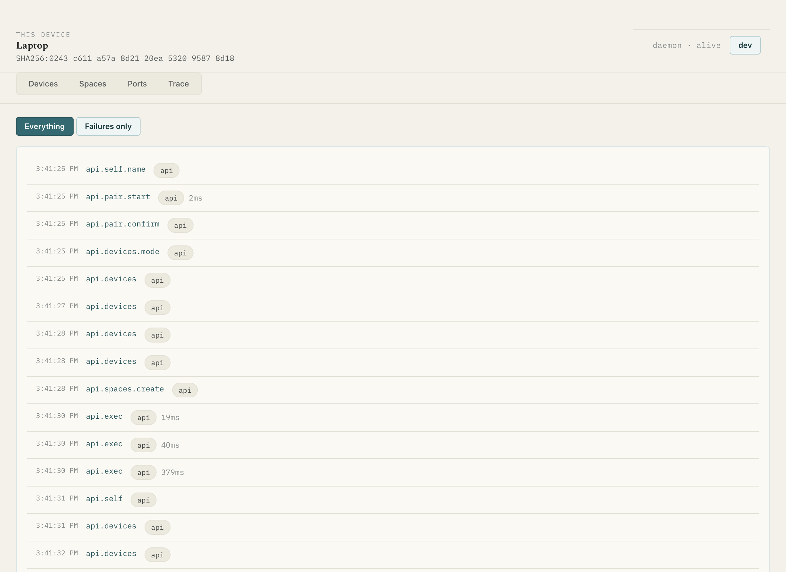
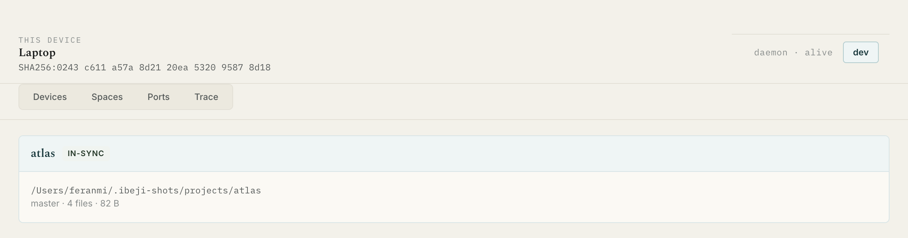

Pair once
Both Macs find each other over mDNS, or you type an IP. Compare six digits, confirm on both, and each pins the other's key. It never asks again.
You edit on the Laptop. The build runs on the Desktop, where the credentials and the VPN live. Ìbejì links exactly two of your own Macs over the LAN — shared folders, port tunnels, file drop, and a CLI, HTTP API and MCP surface your coding agents can drive.
$curl -fsSL https://raw.githubusercontent.com/spiderocious/ibeji/main/scripts/install.sh | sh
One command, on each Mac. It installs the app, starts the background
daemon at login and puts ibeji on your PATH.

The thing it is for
Anyone with two machines knows the shape of it. You edit on the one with your setup, and the thing you are editing can only build, run or deploy on the other — because that is where the credentials live, or the toolchain, or the GPU. So you SSH in and lose your editor, or you copy files by hand and lose track of which copy is real.
$ibeji run desktop --cwd ~/projects/atlas --after-sync atlas -- git push
The push leaves from the Desktop, with the Desktop's credentials on the Desktop's VPN. --after-sync waits for your last save to land first, so the commit never captures a half-synced tree.
What it does
Both Macs find each other over mDNS, or you type an IP. Compare six digits, confirm on both, and each pins the other's key. It never asks again.
Pick a folder, invite the other Mac. Real files on both disks, not a network mount. One side is master, and master wins — the other version is kept beside it as a conflict copy, never dropped.
See every listening port on both machines, labelled where we can
recognise it. Click one and a tunnel opens: a server bound to
127.0.0.1 over there answers on your localhost here.
Commands run in your real login shell, so nvm, pnpm, homebrew and git's credential helper are all on PATH. Output streams back live and the exit code is the one you'd have got standing at the machine.
Every call the daemon handled, with payloads, durations and the
failures filtered on their own. When something misbehaves,
ibeji trace tells you what actually happened.
Send files or folders straight to the other Mac's inbox. Turn on clipboard sync and what you copy here pastes there within a second.
In Prompt mode every command and every write asks first, naming the machine and the exact command. Approve one repeatedly and you can remember the rule — the same command, the same folder, no more asking.
An MCP server ships with the app. Your coding agent can list, read, grep, write and run on the other machine — through the same permission gate you use, with the same trace behind it.
ibeji doctor runs six checks — daemon, keychain, token,
mDNS, link, login shell — and each failure names its own fix instead of
leaving you guessing.
Try it here
Press a button on either Mac below and watch the other one answer. This is a walkthrough built into the page, following what really happens over the link.
~/projects/atlas
daemon log
The real window
This is the whole app. Four tabs, no sidebar, no dashboard — the addresses, the ports and the sync state are on screen where you can read them.

Port Lens. Both machines' listening ports in one list. Link opens a tunnel; here means it is already yours.

Trace. What the daemon did, with durations. Failures only is the first thing to press when something is wrong.

Spaces. A folder on both disks, its role, and whether it has caught up.
Devices. The pair, its address, its mode. The IP is always on screen, never behind a detail view.
Where it stops
Ìbejì does not make one machine a gateway for the other, does not enable IP forwarding, and does not route the other machine's traffic through any tunnel. That is a permanent exclusion, not a thing we haven't got to yet.
✓ LaunchAgent loaded, pid 15218 ✓ Keychain reachable ✓ API token valid · http://127.0.0.1:52963 ✓ mDNS advertising and browsing ✓ Link Desktop · live · 192.168.1.39 ✓ Login shell zsh provides 7 of the 7 common tools
Six checks. Each failure names its own fix.
For agents
Paste the prompt below into Claude Code, Cursor or any agent with shell access, and it will install Ìbejì on the machine it is running on, check the install, and tell you what to do on the second Mac.
Install Ìbejì on this Mac. It is a LAN-only tool that pairs two Macs so one can run commands, share folders and tunnel ports to the other. 1. Run this, which installs the app, the background daemon and the CLI: curl -fsSL https://raw.githubusercontent.com/spiderocious/ibeji/main/scripts/install.sh | sh 2. Verify it with `ibeji doctor`. Every line should be a ✓ except "Link", which will say no device is paired yet. If a check fails, the failure names its own fix — apply it and run doctor again. 3. Tell me this Mac's name and LAN address by running `ibeji devices`, and remind me to run the same install command on my second Mac. Do not try to pair the machines yourself: pairing needs a human to compare six digits on both screens at once. Notes: - macOS only. It uses launchd, the macOS keychain and the zsh login shell. - Nothing touches the internet. Both Macs must be on the same LAN. - Full reference for agents: https://ibeji.dev/ibeji.md
Once two Macs are paired, your agent can treat the other one as
extended workspace: list_remote_dir,
read_remote_file, search_remote_files,
run_remote_command, open_tunnel,
wait_for_sync and the rest — each gated by the same
permission mode you set, each recorded in the same trace.
$curl https://ibeji.dev/ibeji.md
/ibeji.md is this whole site as Markdown, written for agents rather than people — commands, flags, the permission model and the failure modes, with none of the pictures.
What you need
Set it up
Install
This is the path we test and the one we recommend. It picks the right build for your chip, checks the download against its published checksum, installs the app, starts the daemon at login and links the CLI.
$curl -fsSL https://raw.githubusercontent.com/spiderocious/ibeji/main/scripts/install.sh | sh
Already have it? The same command checks your version first and asks
before reinstalling. --force skips the question.
| Build | File | For | |
|---|---|---|---|
| App · Apple silicon | Ibeji-0.1.3-arm64.dmg | M1 and later | Download |
| App · Intel | Ibeji-0.1.3.dmg | Intel Macs | Download |
| CLI only · Apple silicon | ibeji-cli-0.1.3-darwin-arm64.tar.gz | Headless use | Download |
| CLI only · Intel | ibeji-cli-0.1.3-darwin-x64.tar.gz | Headless use | Download |
| Checksums | SHA256SUMS.txt | Verify a download | View |
A DMG downloaded in a browser is quarantined by macOS and needs
xattr -dr com.apple.quarantine /Applications/Ibeji.app once
after installing. The curl command above avoids that entirely, because
curl does not set the quarantine flag.
Questions
No. There are no accounts, no cloud, no relay and no web app. The two daemons talk directly to each other over your LAN. If the machines are not on the same network, Ìbejì does nothing — there is no store-and-forward and nothing queues in a server somewhere.
Yes, and not as a temporary limitation. The daemon runs as a launchd LaunchAgent, stores its keys in the macOS keychain, enumerates ports with the system's own tooling and runs commands in your zsh login shell. A Windows or Linux build would be a rewrite of those four subsystems, not a build flag. Both machines must be Macs.
Because the trust unit is a pair, and a pair is simple enough to reason about: one pinned key each, one permission mode per direction, one link. A mesh of three or more changes the security model and most of the UI with it. It is deferred, not forgotten.
That depends on the mode you set, and the honest answer has a sharp edge to it.
Writes and commands are gated. In Prompt mode — the default
— every command, every file write and every app launch asks you first,
naming the machine and the exact command. You can remember a rule for
one exact command in one folder, so git push in a repo you
approve once stops asking. In Bypass mode they run without asking.
Reads are not gated in v1. A paired device can read and grep
anything your user account can, including ~/.ssh and
~/.aws. Prompting on every read would make the agent
surface unusable, so the trade is stated plainly rather than hidden:
in Prompt mode the other machine cannot run anything, but it can read
everything. Pair only with a machine you fully trust. Path-scoped
rules are the v2 answer.
The master's version wins, and the replica's version is kept beside
it as a conflict copy — report.conflict-from-laptop.md —
never silently discarded. The conflict shows up in the space's
activity feed, and from either machine you can promote the conflict
copy over the master's version or discard it.
For a code repository, make the master the machine that owns the
git credentials. That makes master-wins the right outcome: a
git pull on the master beats an unsynced edit on the
replica.
.git folder?No, and it argues with you if you try. Syncing .git
across two machines corrupts repositories through
index.lock races and half-written objects, and it defeats
the pattern the whole product is built on: sync the working tree, run
git on the machine that owns the credentials. node_modules/,
build output and .DS_Store are ignored by default too,
and a folder with a .gitignore can import its patterns.
Never. Ìbejì does not bridge networks, enable IP forwarding or
route one machine's traffic through the other. What crosses the LAN is
a command, a tunnel to a localhost port, or a URL — so
git push leaves from the machine that holds the
credentials, on that machine's VPN.
The one case this genuinely cannot serve is a tool running locally that needs routed access to a host only the other machine can reach. A tunnel covers most of it, because it reaches whatever that machine reaches on its own loopback. Where it does not, run the tool on the other machine and tunnel its port.
Install with the curl command and you will not see either dialog — curl does not set the quarantine flag that triggers them, browsers do.
If you downloaded a DMG by hand, run
xattr -dr com.apple.quarantine /Applications/Ibeji.app
once. The app is ad-hoc signed but not notarized, which needs a paid
Apple Developer account.
Multicast is often blocked on corporate and guest Wi-Fi, which is what mDNS discovery needs. The window shows this Mac's own address for exactly this reason: read it off one screen, press Add by IP address on the other, and type it in. Manual entry is a first-class path, not a fallback.
Both daemons listen on TCP port 7749. Check they are both running
with ibeji doctor.
No. The daemon starts at login and runs in the background; closing the window does not drop the link, and the CLI and MCP server keep working. The window is one client of the daemon's local API, the same as the others.
The pinned key is revoked immediately and every active tunnel, sync and session closes with it. The other machine cannot reconnect — it will show as unreachable rather than quietly walking back in. Files already synced to each disk stay where they are.
The app checks for new releases and tells you when one exists, with a button that re-runs the installer for you. You can also just run the curl command again at any time — it compares your installed version first and asks before reinstalling the same one.
No. It is v0.1.3 and it is young — the version number is honest about that. Pairing, spaces, ports, exec, trace, the CLI and the MCP server all work, and every release is tested by pairing two machines and running the whole flow. Expect rough edges, and expect them to be fixed in the open.
Nothing. It is free and open source, there is no account, no subscription and no paid tier. The source is on GitHub and you can read every line of what runs on your machines.